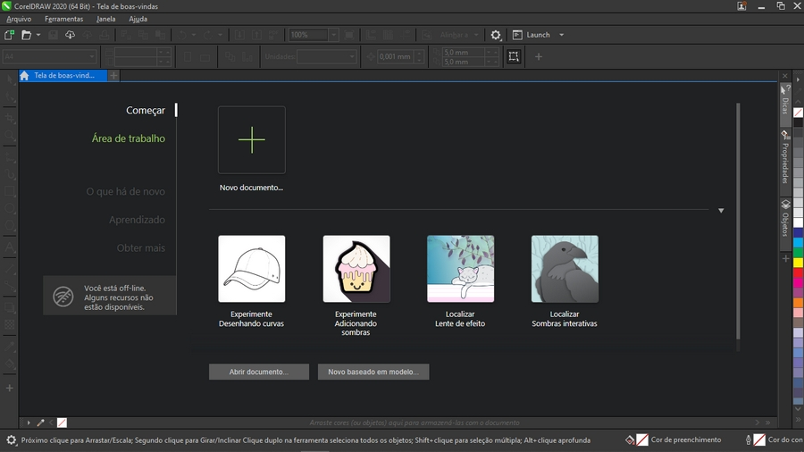

O CorelDraw é uma aplicação profissional, completa e prática para desenho vetorial com uma infinidade de recursos para facilitar a criação gráfica.
Tela inicial do CorelDraw:
O CorelDraw é a principal aplicação da Suíte Gráfica do Corel, desenvolvida pela empresa canadense Corel Corporation, que possui ainda outras suítes para desenho técnico, pintura digital e edição de vídeo. É um dos softwares mais completos e práticos para desenho vetorial com praticamente todos os recursos de seus concorrentes comerciais e é a principal ferramenta em gráficas, possui ainda a vantagem de aceitar praticamente todos os formatos de vetor e de imagem além de exportar também em praticamente todos os formatos, facilitando a transição de uma arte em diferentes softwares.
Ao abrir o CorelDraw encontraremos a Tela Inicial, onde podemos criar um arquivo, abrir um arquivo existente, um arquivo de modelo e ainda utilizar alguns recursos online. O CorelDraw trabalha com o modo de guias, ou abas, assim como o Excel, dando a possibilidade de navegar facilmente entre vários arquivos abertos, pois cada um aparece em sua respectiva guia, logo acima do canvas.
Assim que criamos um arquivo, temos acesso à Área de Trabalho, em cujo centro encontra-se a página, os principais recursos do Corel encontram-se na Barra de Ferramentas ao lado esquerdo, a Paleta de Cores, ao lado direito, a Barra de Propriedades logo acima, e a navegação de páginas logo abaixo.
O modo de cor de um desenho pode ser selecionado no momento da criação do arquivo.
A facilidade de trabalho no CorelDraw se deve ao fato de toda a edição de objetos ser focada na Barra de Propriedades, que se altera constantemente de acordo com o tipo de objeto selecionado ou de acordo com a ferramenta ativa, exibindo as principais opções de modificação disponíveis.
O CorelDraw também permite o agrupamento de janelas de encaixe na lateral direita da tela para termos acesso às opções utilizadas com mais frequências, as mais utilizadas são Objetos (Camadas), Alinhar e Distribuir e Propriedades, lembrando que a maioria dos recursos encontramos diretamente na Barra de Propriedades. Para ativar janelas de encaixe basta ir até o menu Janela → Janelas de Encaixe.
O CorelDraw possui um dos modos mais fáceis de se criar e editar formas. A criação pode ser feita com as ferramentas Caneta ou Bézier, ambas se encontram no mesmo conjunto na barra de ferramentas, a ferramenta caneta é a mais prática para desenhar. A edição pode ser feita apenas com a ferramenta Forma que se encontra no segundo conjunto, ou pelo atalho F10.
O CorelDraw possui ainda a possibilidade de se criar formas primitivas e editá-las de maneira particular. Para converter uma forma primitiva numa curva podemos utilizar o ícone Converter em Curvas da Barra de Propriedades ou utilizar o atalho Ctrl+Q.
A aplicação de preenchimento e contorno no Corel também é feita de maneira bem simples, basta clicar na cor com o botão esquerdo para aplicar um preenchimento, ou com o botão direito para aplicar um contorno, para mais opções de preenchimento pode-se utilizar o menu Preenchimento (F11) ou Contorno (F12). A aplicação de gradientes pode ainda ser feita com a ferramenta Gradiente, que se encontra no mesmo conjunto da ferramenta Sombra.
Para arranjar objetos no Corel podemos utilizar as teclas PageDown, PageUp, Home e End assim como no Inkscape, porém com a tecla Control pressionada. Ou podemos utilizar os ícones, Enviar para Trás e Trazer para Frente da Barra de Propriedades, a lista completa com essas opções pode ser acessada clicando com o botão direito do mouse e selecionando Ordenar. Para alinhar os objetos podemos utilizar a janela de encaixe Alinhar e Distribuir.
Vale ressaltar que o CorelDraw não possui alinhamento relativo enquanto movemos objetos, como no Illustrator, para alinhar objetos ao movê-los precisamos clicar diretamente sobre os nós e arrastá-los para onde queremos.
Todas as opções de operações booleanas no CorelDraw aparecem na Barra de Propriedades assim que selecionamos mais de um objeto, e as três primeiras são as principais, Intercessão, Subtração e União, no caso da Subtração é chamada de Aparar.
O gerenciador de camadas no CorelDraw é chamado de Gerenciador de Objetos, ou simplesmente Objetos, e possui todos os recursos principais de ocultar e bloquear camadas. O CorelDraw possui o recurso de camada mestra, que é exibida em todas as páginas possibilitando a criação de layouts que se repetem, e ainda camadas especiais em cada página para as guias possibilitando ocultar ou bloquear facilmente linhas-guia.
Pessoas que sempre trabalharam com CorelDraw se acostumam com o gerenciador de objetos, mas para pessoas vindas de outros softwares talvez seja ideal de início desativar duas opções que são: Expandir para exibir a seleção, e Selecionar objeto para ativar camada, essas opções podem ser desativadas clicando no ícone de engrenagem no gerenciador.
Para efetuar uma clipagem no CorelDraw basta arrastar um objeto com o botão direito do mouse e soltar sobre outro objeto, e então selecionar Powerclip dentro. Ou clicar com o botão direito do mouse sobre um objeto e selecionar Inserir no Powerclip, em seguida clicar no recipiente. O Powerclip do CorelDraw permite a edição livre do conteúdo da clipagem inclusive múltiplas clipagens em vários níveis (clips dentro de clips).
O CorelDraw trabalha com o conceito de transparência, ou seja, quanto maior o valor, mais transparente será o objeto, e para tal possui uma ferramenta própria que é a ferramenta Transparência que permite a criação de maneira simples de transparências uniformes, gradientes e radiais além de aplicar mesclagem de cores. O Corel possui uma grande quantidade de opções de mesclagem com bastante eficiência até mesmo com bitmaps e em modo CMYK.
Para se aplicar sombras e brilhos no CorelDraw utilizamos a ferramenta Sombra na Barra de Ferramentas, que possui as opções de sombra interna e sombra externa, o brilho é aplicado utilizando uma sombra de cor clara. A ferramenta possibilita posicionar uma sombra ao arrastar a ferramenta e controlar sua transparência diretamente no controle. Na barra de propriedade temos ainda diversas opções para controlar o desfoque (enevoar), e a intensidade.